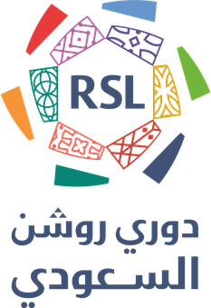
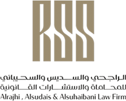
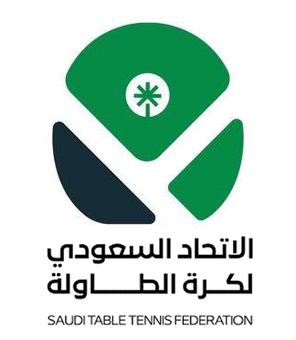
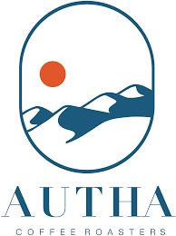
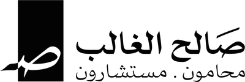
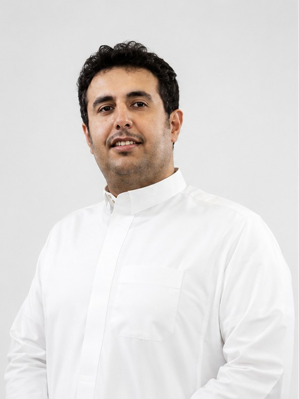
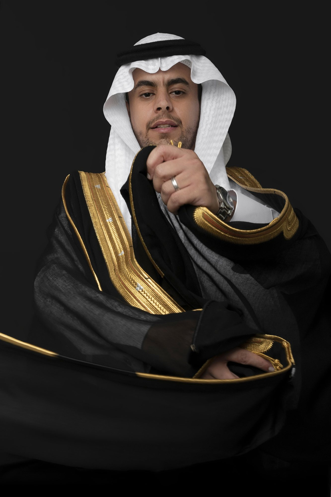

استماع
نفهم المطلوب بدقة من أول مرة.
سيرة مؤسسة إعلامية سعودية مقرها الرياض، نعمل مع علامات ومؤسسات وشخصيات لنحوّل أفكارها إلى محتوى بصري يُروى بالشكل الصحيح. لا نتعامل مع الإعلام كمحتوى يُنتَج ويُنشر، بل كرسالة تُصاغ بعناية لتترك أثرًا حقيقيًا.
من الفكرة الأولى إلى اللقطة الأخيرة، نجمع بين الإنتاج المرئي والتصوير الفوتوغرافي والتصميم والتسويق الرقمي تحت سقف واحد، بفريق يفهم القصة قبل أن يُخرج الكاميرا، ويهتم بالتفصيل الذي لا يُرى بقدر اهتمامه باللقطة التي تُرى.
أن تكون "سيرة" الاسم الذي يُستدعى أولًا حين تحتاج فكرة إلى من يرويها بصريًا، بصدق وحرفية.
نحوّل أفكار عملائنا إلى محتوى يعكس هويتهم الحقيقية، بإنتاج مدروس من أول فكرة إلى آخر تفصيلة.
لديك فكرة تستحق أن تُروى
تصوير الإعلانات - تصوير الأفلام الوثائقية - التغطيات الإعلامية - المؤتمرات والمناسبات - التصوير الجوي - المونتاج
جلسات تصوير خاصة - تصوير المنتجات - تصوير الاحتفالات والمناسبات - التصوير المخصص
تصميم الهويات البصرية - تصميم الإعلانات - تصميم المنشورات - تصميم المطبوعات
التسويق الإلكتروني - صناعة المحتوى الإعلاني - إدارة حسابات التواصل الاجتماعي
ست خطوات، بلا اختصارات.
نفهم المطلوب بدقة من أول مرة.
نطوّر الفكرة قبل أي تنفيذ.
كل تفصيلة جاهزة قبل يوم التصوير.
تصوير، تصميم، وإنتاج — على أرض الواقع.
مونتاج، ألوان، صوت، وتصميم نهائي.
يصلكم العمل جاهزًا للانطلاق.
نشوف الفكرة كصورة قبل ما تصير جملة.
كل يوم تصوير مخطط له، مو مرتجل.
العميل جزء من القرار، مو بس يستلم النتيجة.
أدق تفصيلة هي الفرق بين شغل عادي وشغل سيرة.
نحوّل اللحظات إلى صور تنبض بالحياة، بعدسات احترافية ولمسات إبداعية تُبرز التفاصيل بدقة، لتعكس هوية علامتك وتترك أثرًا بصريًا لا يُنسى.
نلتقط اللحظة التي تصنع التاريخ. تغطيات احترافية للمباريات والبطولات والفعاليات الرياضية، بعدسة تواكب سرعة الحدث وتحافظ على أدق التفاصيل.
نلتقط اللحظة التي تصنع التاريخ. تغطيات احترافية للمباريات والبطولات والفعاليات الرياضية، بعدسة تواكب سرعة الحدث وتحافظ على أدق التفاصيل.
صورة تعكس حضورك قبل كلماتك. جلسات تصوير احترافية للأفراد والقيادات والشخصيات العامة، بإضاءة مدروسة وإخراج يعكس الثقة والاحترافية.
نحوّل المنتج إلى تجربة بصرية. إنتاج صور دعائية عالية الجودة تبرز تفاصيل المنتجات وتدعم الحملات التسويقية للعلامات التجارية.
نوثق الحدث كما يستحق أن يُروى. تغطية شاملة للمؤتمرات والفعاليات الرسمية والمناسبات الكبرى مع التركيز على أهم اللحظات.
نبرز جمال المكان قبل زيارته. تصوير احترافي للمشاريع العقارية والمعالم المعمارية لإظهار المساحات والهوية البصرية بأفضل صورة.
صور تفتح الشهية قبل أول لقمة. تصوير احترافي للأطباق والمشروبات وتجربة الضيافة بإخراج بصري يبرز الجودة والتفاصيل.
ذكريات تُحفظ كما عشتها. توثيق سينمائي للحظات الاستثنائية بأسلوب هادئ وطبيعي يحافظ على المشاعر الحقيقية.
من التخطيط إلى التنفيذ، نعمل على إنتاج فيديوهات احترافية تروي قصتك بأسلوب مبتكر، وتمنح علامتك حضورًا قويًا في عالم سريع التغير.
لمحة حقيقية من كواليس أعمال سيرة.
شاهد المزيد من كواليس سيرة على سناب شات
شاهد المزيدنفخر بالعمل معهم





نعمل حاليًا على تجهيز باقة من المنتجات الإبداعية الجديدة. ترقّبوا التفاصيل قريبًا.
استكشف قصتنا، خدماتنا، وأبرز أعمالنا في الملف التعريفي للشركة.
تحميل الملف التعريفي (PDF)
مدير إبداعي
يقود التوجه الإبداعي لكل مشروع، من الفكرة الأولى حتى آخر لمسة قبل التسليم.
أؤمن أن الأفكار الجيدة تحتاج من يحميها من أول يوم، لا من يزيّنها في النهاية فقط.
راوي بصري
يحوّل الفكرة إلى صورة، بعين تلتقط اللحظة قبل أن تصير لحظة.
أكثر ما يشدّني هو اللحظة التي لا يلاحظها أحد، لكنها تحمل القصة كاملة.
منتج إبداعي
يبني كل إنتاج من الصفر، ويحوّل الخطة إلى تنفيذ فعلي على أرض الموقع.
أجد رضاي الحقيقي في التفاصيل التي لا يراها أحد، فهي ما يجعل التنفيذ يسير دون عثرات.
نبحث عن المبدعين الذين يشاركوننا الشغف بصناعة قصص بصرية تستحق أن تُروى.
شكرًا لرغبتك في أن تكون جزءًا من سيرة. سنراجع طلبك، ونتواصل معك إذا كانت هناك فرصة مناسبة.

نعم، نعمل مع الشركات والعلامات التجارية والجهات والأفراد، ونطوّر لكل مشروع الحل البصري والإنتاجي المناسب له.
نقدم خدمات التصوير الفوتوغرافي، الإنتاج المرئي، صناعة المحتوى، التصميم، والتسويق، مع إمكانية بناء حلول متكاملة حسب احتياج المشروع.
يمكنك التواصل معنا من خلال قسم التواصل واستقبال المشاريع وإرسال تفاصيل فكرتك، ثم يراجع الفريق المتطلبات ويتواصل معك لمناقشة المشروع والخطوات القادمة.
نعم، يمكنك طلب خدمة محددة أو الجمع بين أكثر من خدمة بحسب طبيعة المشروع واحتياجه.
نعم، نقدم خدمات التغطية والتوثيق الفوتوغرافي والمرئي للفعاليات والمناسبات والمشاريع المختلفة.
نعم، يمكنك استعراض مجموعة من أعمال سيرة ومشاريعها من خلال قسم الأعمال.
تختلف التكلفة والمدة حسب طبيعة المشروع وحجمه ومتطلباته. بعد استلام تفاصيل المشروع يمكن للفريق تحديد نطاق العمل والمتطلبات المناسبة.
نعم، يمكنك التقديم للعمل مع الفريق من خلال نموذج التقديم الموجود داخل الموقع وإرسال بياناتك ورابط أعمالك.
نعم، يمكنك استخدام قسم التواصل واستقبال المشاريع داخل الموقع وإرسال تفاصيل مشروعك مباشرة.
يمكنك التواصل معنا من خلال قسم التواصل الموجود داخل الموقع.
أخبرنا عن مشروعك وسنعود إليك.
من أعمال سيرة
تابع آخر أعمالنا على حساباتنا الرسمية